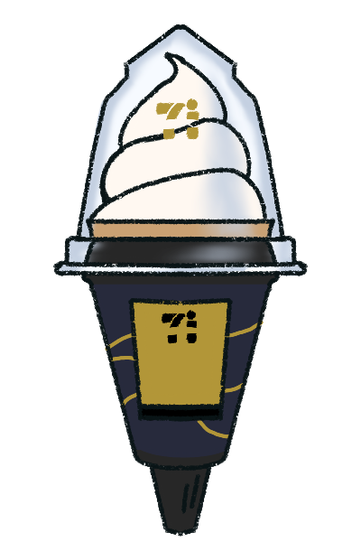
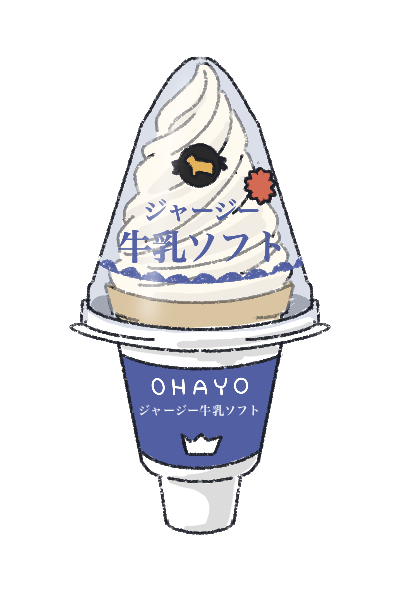

金のアイスワッフルコーン マダガスカルバニラ
バニラ感☆4.5, ワッフルが美味しく、ボリューミー。
ハードなバニラアイスのようなイメージ。

ohayo ジャージー牛乳ソフト
しっかりとしたミルク感があるが、すっきり食べられる。
コーンはサクサクと。大きなスーパーでよく売られている
ので手に入れやすい。
ハーゲンダッツ
本物のバニラビーンズを用られ香り高く濃厚でクリーミーな
ハーゲンダッツは贅沢したい時に最適！